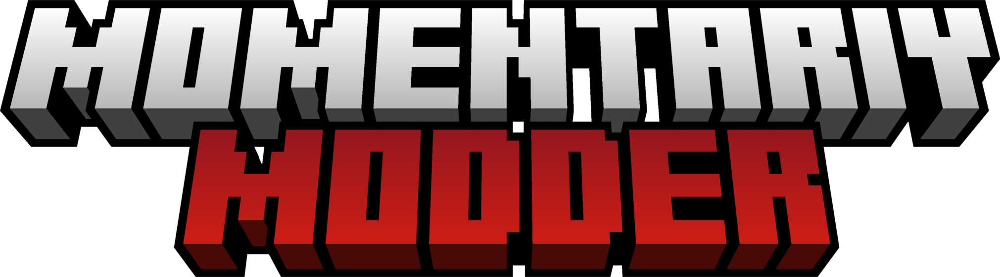

<!--
MomentariyModder Website 7.0.0 by MomentariyModder
The source code is available on GitHub!
-->

<!DOCTYPE html>
<html lang="en">
<head>
  <link rel="icon" href="../img/themes/standard/favicon.png">
  <title>Created Music Discs - 3.7.0 & 4.1.0 | Blog | MomentariyModder</title>
  <meta name="viewport" content="width=device-width, initial-scale=1, maximum-scale=1" />
  <meta name="title" content="Created Music Discs - 3.7.0 & 4.1.0 | Blog | MomentariyModder">
  <meta name="description" content="Welcome to my website! I am MomentariyModder, or as my friends and acquaintances often call me, Modder. I'm 19 years old, and I'm from Belarus (a small country in Europe bordering Russia and Ukraine). I also like to create almost any content for Minecraft, that is: mods, maps, resource packs, servers.">
  <meta name="keywords" content="Minecraft, Mods, MomentariyModder">
  <meta name="theme-color" content="#4bb4f1">


  <script src="https://code.jquery.com/jquery-3.3.1.min.js"></script>
  <script src="https://cdn.jsdelivr.net/npm/handlebars@latest/dist/handlebars.js"></script>
  <script src="https://mcapi.us/scripts/minecraft.min.js"></script>
  <script src="../js/main.js"></script>
  <script src="../config.js"></script>
  <script src="../js/lightbox.min.js"></script>
  <script src="https://cdn.jsdelivr.net/npm/@widgetbot/crate@3" async defer>
  new Crate({
    server: '696094539823448085',
    channel: '1156033421940891688'
  })
  </script>
  
  <script>tosAgreed = true</script>
  
  <link rel="stylesheet" href="https://cdnjs.cloudflare.com/ajax/libs/font-awesome/6.6.0/css/all.min.css"/>
  <link rel="stylesheet" href="../css/style.css">
  <link rel="stylesheet" href="../config.css">
  <link href="../css/lightbox.css" rel="stylesheet" media="all">

</head>


<body>

  <div id="target"></div>

  <script id="template" type="text/x-handlebars-template">

  <header>
    <div class="hero" id="hero">
      <a href="#!"><h1 style="padding-top: 3%;"></h1></a>
    <p> </p>
    <div class="news-card" align="center">
	  <a href="../" class="btn"><i class="fa-solid fa-house"></i> Home</a>
      <a href="../Blog" class="btn"><i class="fa-solid fa-newspaper"></i> Blog</a>
	  <a href="#links" class="btn"><i class="fa-solid fa-share"></i> Links</a>
    </div>
	<p> </p>
	</div>
  </header>
  
  <section class="dark" id="blog">
	<h1><i class="fa-solid fa-newspaper"></i> Blog</h1>
    <div id="news">
	<div class="news-card" align="center">
	<a>UPDATES</a><br>
	<a href="../img/blog/cmd-3.7.0-4.1.0/head.png" data-lightbox="roadtrip"></a>
	<h1 align="center">Created Music Discs - 3.7.0 & 4.1.0</h1>
	<i>10.07.2024, 07:30</i><br>
	</div>
	<p>
	<b>Changes:</b><br>
	- Renamed Music Bag to Music Disc Bag (3.7.0)<br>
	- Music Disc Bag: Added crafting and inventory (3.7.0)<br><br>
	<b>Added compability:</b><br>
	- Afflasi Ruins (by Herobrine011840): NeoForge/Forge<br>
	- Alex's Caves: Adventure (by Bluezers): NeoForge/Forge<br>
	- Alex's Caves: Stuff & Torpedoes (by Furti_Two): NeoForge/Forge<br>
	- Call of Yucatán (by Unusual_Squad): NeoForge/Forge<br>
	- Eldritch Grotto (by Herobrine011840): NeoForge/Forge<br>
	- Gloom Caves (by Herobrine011840): NeoForge/Forge<br>
	- Herobrine011840's Cave Biomes (by Herobrine011840): NeoForge/Forge<br>
	- Keepers of the Stones (by Environment_Studios): NeoForge/Forge<br>
	- Keepers of the Stones II (by Environment_Studios): NeoForge/Forge<br>
	- Mowzie's Mobs (by bobmowzie): NeoForge/Forge<br>
	- Skyland (by Neeerd/ItzDave): NeoForge/Forge<br>
	- The Legend Of The Dudes (by Isla_Nublar): NeoForge/Forge<br><br>
	<b>Update compability:</b><br>
	- RedWolf's Music Expansion (by RedWolfNinja_): Rewritten compatibility<br>
	- The Bumblezone (by telepathicgrunt): Added new music disсs: "Punpudle - A Last First Last" and "Punpudle - Drowning in Despair"<br>
	- Wizard's Reborn (by MaxBogomol): Added new music disсs: "Onjerlay - Blue Shimmer" and "Onjerlay - Magical Panache"<br><br>
	<b>Fixed:</b><br>
	- Music Disc Bag: Crafting (4.1.0)<br><br>
	<b>Note:</b><br>
	- Fabric/Quilt is no longer supported, more details <a href="https://momentariymodder.netlify.app/blog/discontinuing-fabricquilt">HERE</a>.<br>
	- 4.1.0 is most likely the latest version of the mod for NeoForge 1.20.4, a port to NeoForge 1.20.6 will be started soon.<br><br>
	Download: <a href="../projects/cmd">Page</a>
	</p>
	<p align="center"><i class="fa-solid fa-user"></i> MomentariyModder (Author)</p>
	</div>
	<p> </p>
	<div id="news">
	<div class="news-card" align="center">
	<h2>Comments will be back soon!</h2>
    </div>
    </div>	
  </section>
  <section class="dark">
	<div class="news-card" align="center">
	<a href="../blog/discontinuing-fabricquilt" class="btn2"><i class="fa-solid fa-arrow-left"></i> Previous post</a>
	<a href="../blog" class="btn2"><i class="fa-solid fa-newspaper"></i> Back to Blog</a>
	<a href="../blog/mma-7.0.0" class="btn2"><i class="fa-solid fa-arrow-right"></i> Next post</a>
	</div>
  </section>
  
  <section class="light">
    <h1><i class="fa-solid fa-share"></i> Links</h1>
    <div id="links" align="center">
	  <a href="https://discord.com/invite/9XqgjRd"></a> 
	  <a href="https://t.me/momentariymoddertgk"></a> 
	  <a href="https://twitter.com/momentariymoder"></a>	 
	  <a href="https://www.curseforge.com/members/momentariymodder"></a> 
	  <a href="https://modrinth.com/user/momentariymodder"></a> 
	  <a href="https://github.com/MomentariyModder"></a>
	  <a href="https://patreon.com/momentariymodder"></a>
	  <a href="https://boosty.to/momentariymodder"></a>
	  <a href="https://ko-fi.com/momentariymodder"></a>
	  <a href="https://www.buymeacoffee.com/momentariymodder"></a>
	  <a href="https://www.donationalerts.com/r/momentariymodder"></a>
    </div>
  </section>
  
  
  <footer>
    <a>&copy; 2019-2024 {{server_name}}. All Rights Reserved.</br>{{server_name}} is not affiliated with or endorsed by Mojang Studios or Microsoft<br>{{server_ip}}</a>
	<a></a>
	
  </footer>
  </script>
  <script src="../js/license.js"></script>
  
</body>
</html>